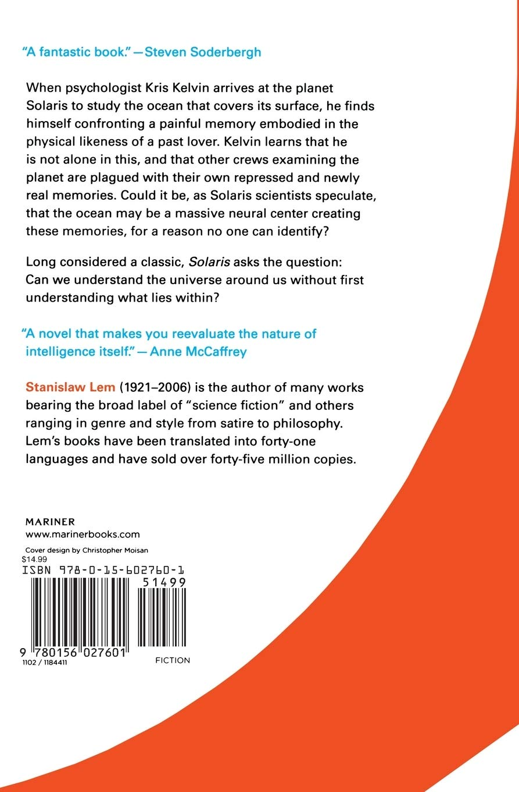
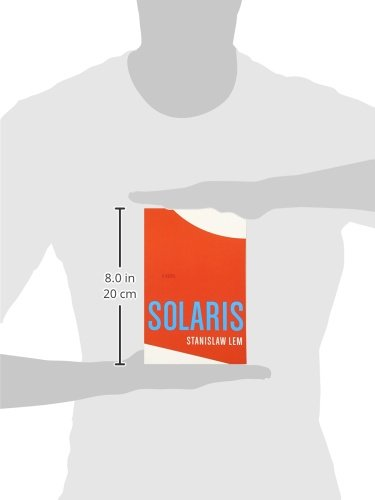

Price: 11.69 $
“A fantastic book.” — Steven Soderbergh
When psychologist Kris Kelvin arrives at the planet Solaris to study the ocean that covers its surface, he finds himself confronting a painful memory embodied in the physical likeness of a past lover. Kelvin learns that he is not alone in this and that other crews examining the planet are plagued with their own repressed and newly real memories. Could it be, as Solaris scientists speculate, that the ocean may be a massive neural center creating these memories, for a reason no one can identify?
Long considered a classic, Solaris asks the question: Can we understand the universe around us without first understanding what lies within?


Made by Duy Bui - s3978546
Email: s3978546@rmit.edu.vn